Bialetti reviews: from classic moka to modern variants
Bialetti is the best-known brand for moka pots, with models ranging from classic aluminium to electric and induction-compatible versions. The reviews show how each model performs on taste, practical use and compatibility with different heat sources, to help you quickly choose the Bialetti that suits your way of making coffee.
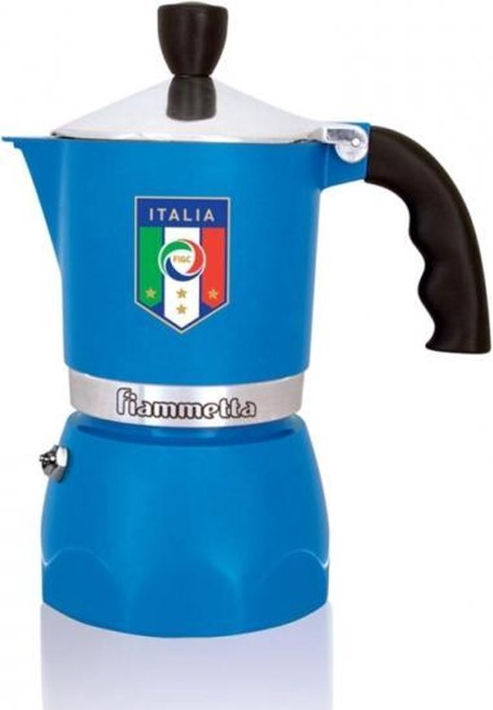
Bialetti Fiammetta
Perfect balance of price, quality and taste. Ideal for beginners.

Bialetti Venus
Best choice for induction. Stainless steel construction compatible with all hobs.

Bialetti Moka Express
The original. The iconic classic that spans generations.
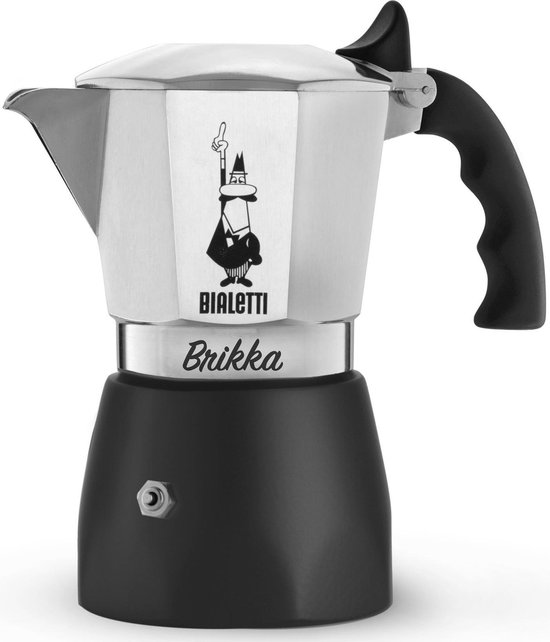
Bialetti Brikka
Unique valve that creates espresso-style crema. For enthusiasts.
Bialetti Moka Timer
First electric Bialetti. Timer up to 24h, automatic shut-off.
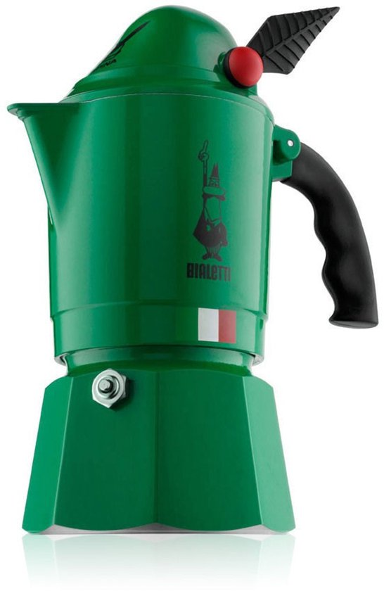
Bialetti Alpina
Compact and elegant. Perfect for small kitchens.

Bialetti Musa
Modern design, stainless steel, induction-compatible. Elegant alternative to the Venus.
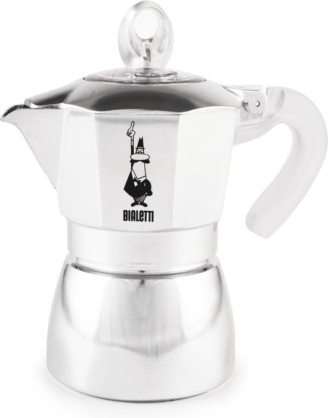
Bialetti Dama
Elegant variant of the classic. For those who want something different.
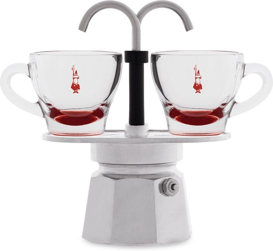
Bialetti Mini Express
The smallest Bialetti. Direct service in 2 cups. Perfect for couples.
Alessi reviews: Italian moka pots with design character
Alessi moka pots combine Italian design with everyday coffee practice. The four tested models — including creations by renowned designers — are evaluated on taste, user comfort and maintenance. This reveals whether the distinctive design is also functionally solid, or primarily a visual statement on the worktop.

Alessi 9090
Richard Sapper's masterpiece. Compasso d'Oro 1979. First induction moka.

Alessi La Conica
Architectural masterpiece. Form > function. For design purists.

Alessi Moka
Modern redesign. 11-facet body. Accessible Alessi design from £70–125.

Alessi Pulcina
Patented V-spout that stops excessive bitterness. Michele De Lucchi design.
Electric moka pots: convenience without a hob
Electric moka pots offer concentrated coffee from their own base, without depending on gas or induction. The five models in this category differ by capacity, extra functions like timers and auto shut-off, and coffee consistency. The reviews show which appliance offers the most convenience and best coffee in practice.
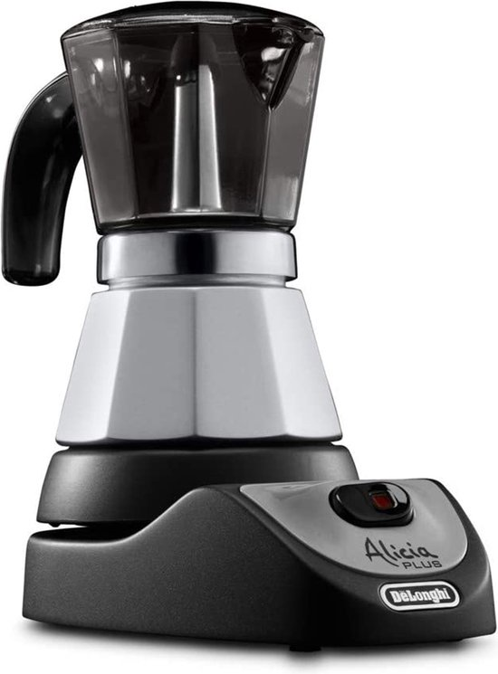
De'Longhi Alicia EMK
Best-selling electric moka pot. Transparent lid, reliable.
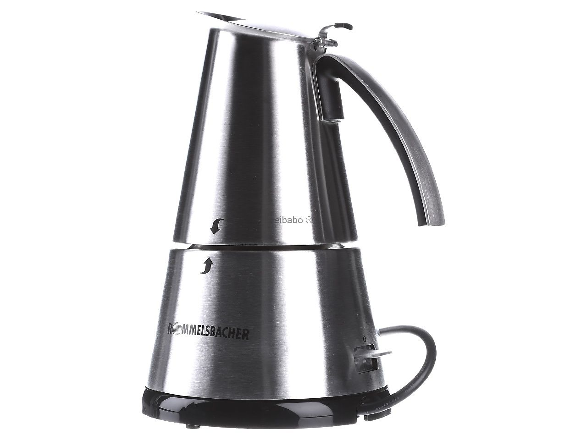
Rommelsbacher EKO 366
German precision. 18/10 stainless. Best electric coffee taste (9.0/10).
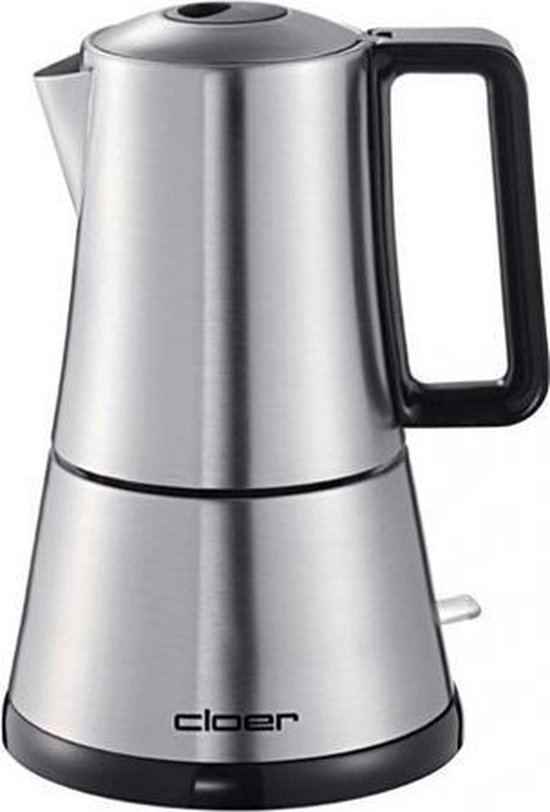
Cloer 5928
German reliability at a budget price. Simple but effective.
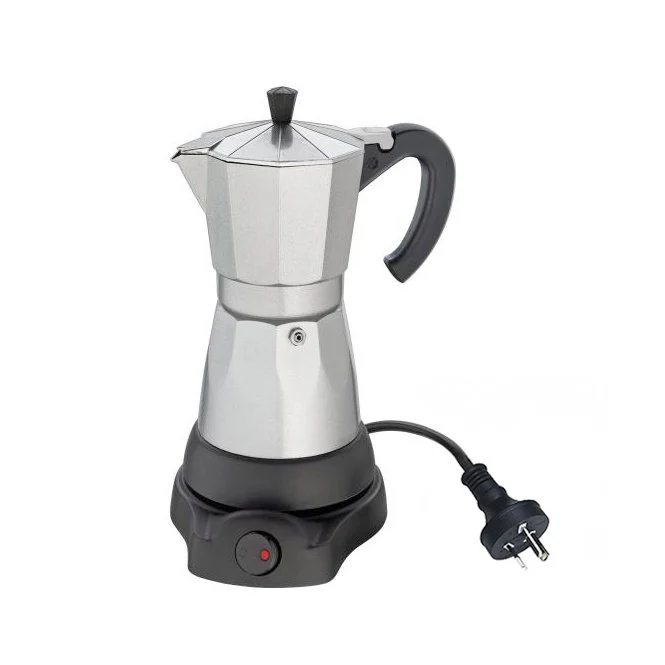
Cilio Classico Electric
Italian design meets electric. Beautiful classic, mid-range price.
Other brands: niche moka pots with their own character
Beyond the big brands, there are smaller brands with their own ideas on materials, form and coffee style. The moka pots tested in this category are evaluated on flavour profile, finish quality and daily use. This helps you choose an alternative to the classics, with a moka pot that stands out in look and feel.
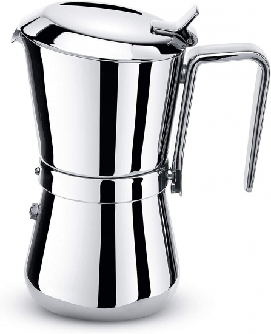
Giannini Giannina
Italian handmade craftsmanship. Patented rotating system, 10-year guarantee.
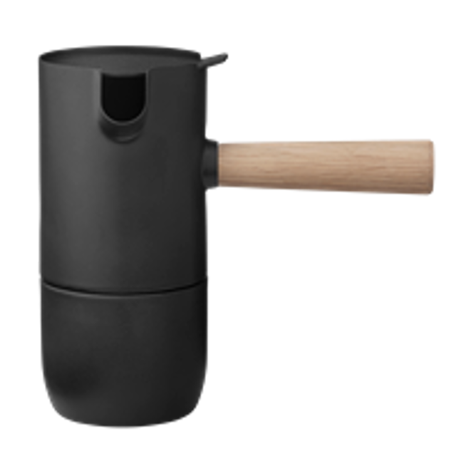
Stelton Collar
Danish minimalism. Wooden handle, compact, perfect for small kitchens.
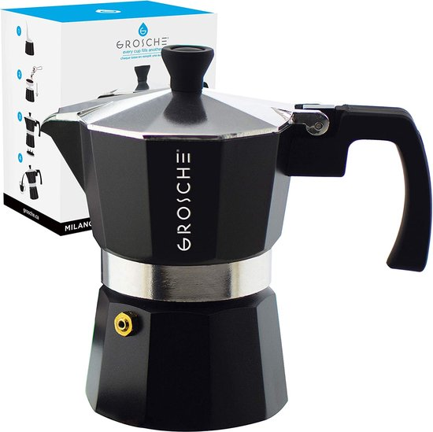
Grosche Milano
Solid Bialetti alternative. Stainless, induction, good value for money.